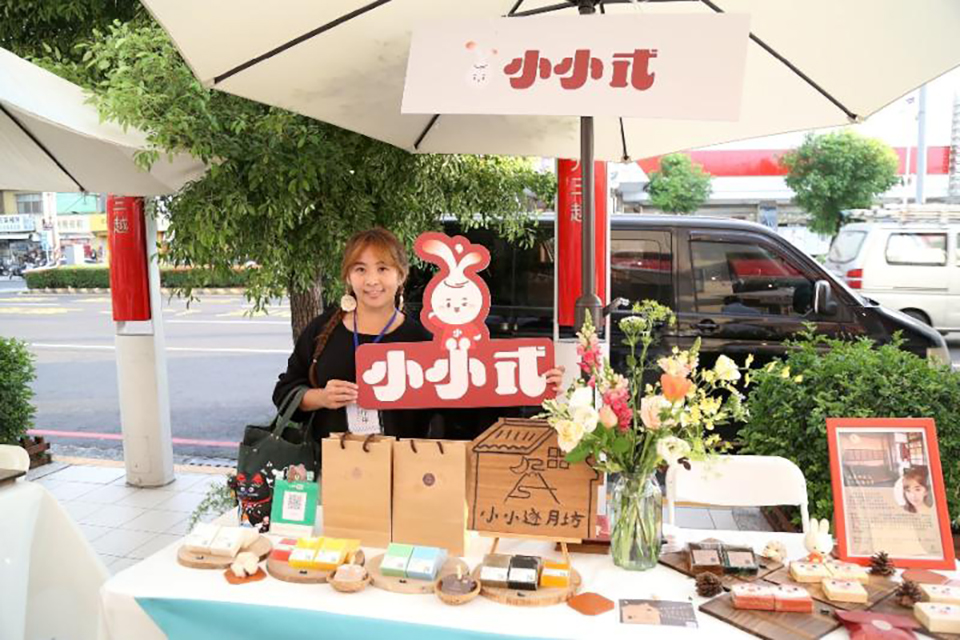
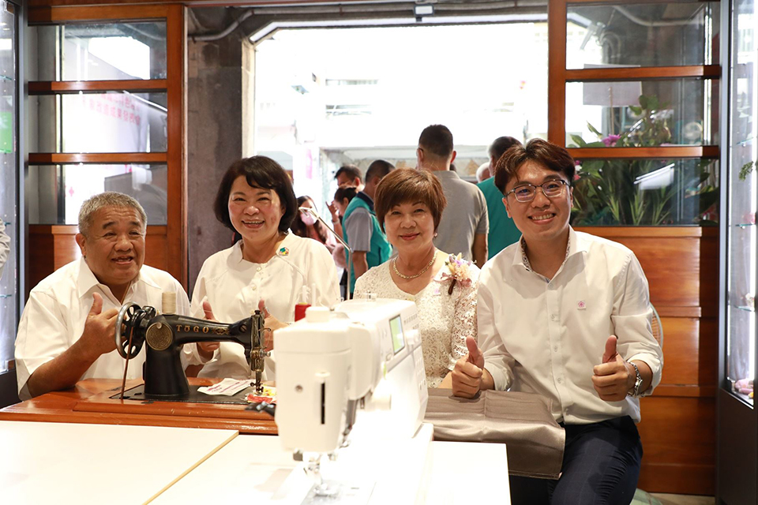
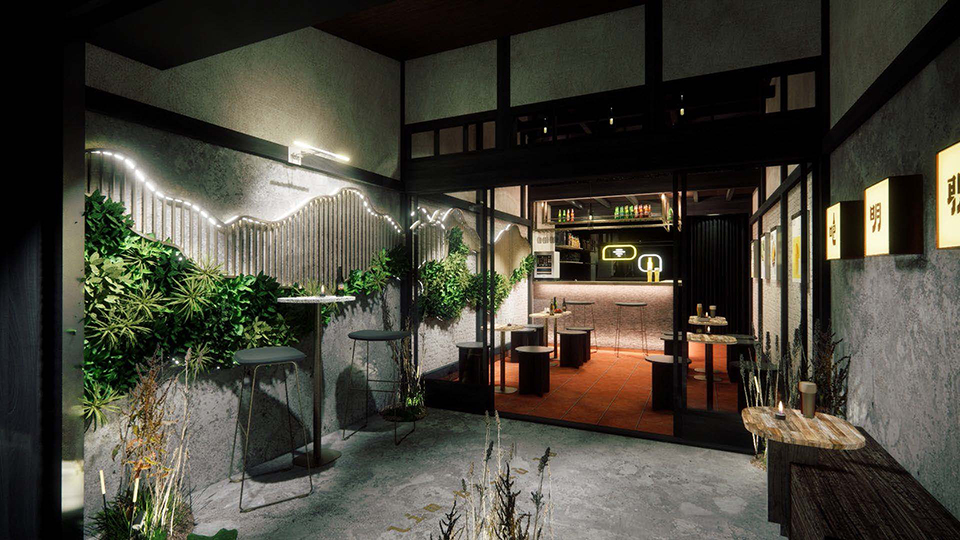
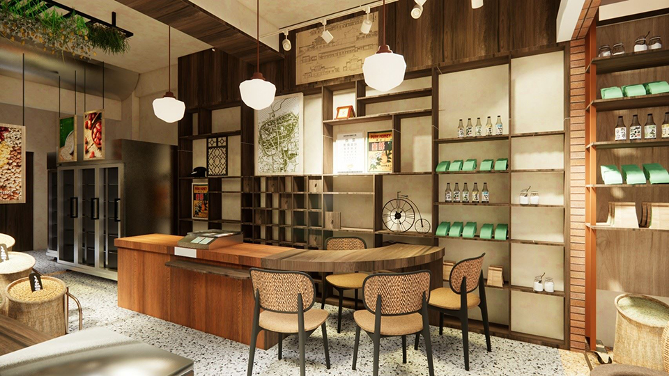
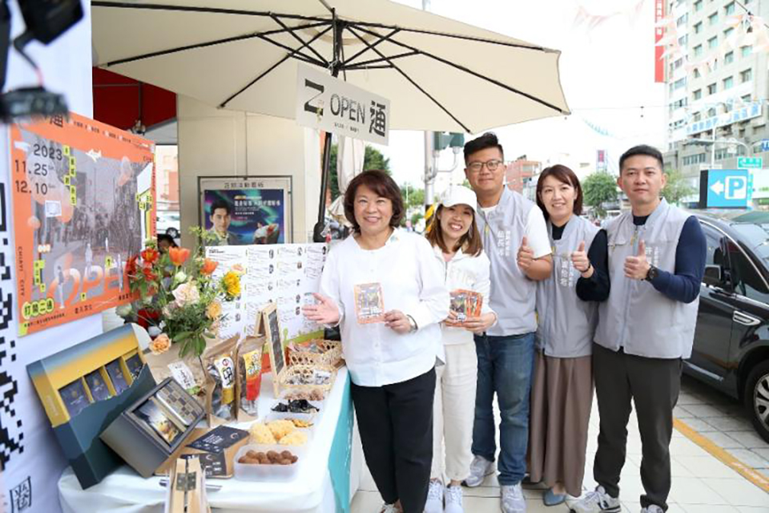
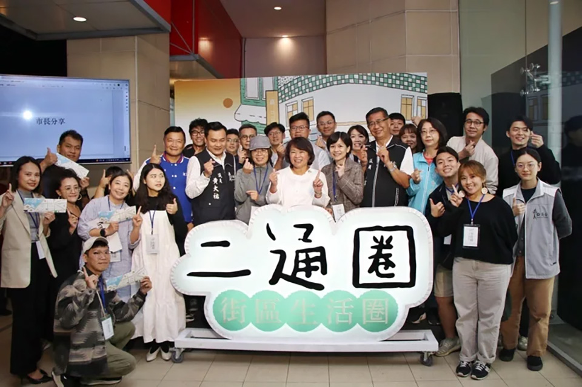

揪踅街 roaming
特色店家形象再造補助
以中正路、文化路口為中心點，以1.5KM半徑劃定目標範圍，透過特色店家改造計畫導入設計力提升店家硬實力，包含
1.盤點範圍區域有改造潛力的商業活動示範點，每年至少選定6家具有改造潛力的商業點進行改造。



2.引進設計力，媒合獲選店家與設計公司進行改造計畫，使其具有嘉義市特色的新形態經營模式。



3.結合輔導單位及專家學者，將不同領域的民眾及店家透過對話交流的方式將二通圈品牌形成共識。

主辦單位｜嘉義市政府建設處
承辦單位｜范特喜文創有限公司